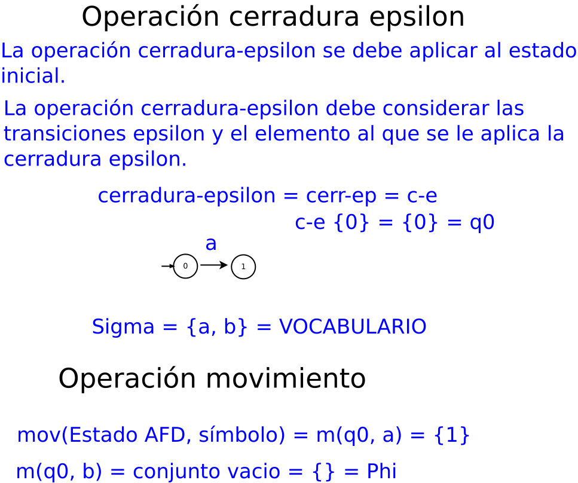

Características de un compilador
Principios fundamentales de la compilación 1.- El compilador debe preservar el significado del código fuente que se esta compilando. 2.- El compilador debe mejorar el código de entrada en una forma entendible.
Pizarrón, archivo dia: SNCompiladores/Compilacion.dia
Pizarrón, archivo dia: SNCompiladores/Interpretacion.dia
Definición la forma de representar el lenguaje
Para especificar de manera mínima el lenguaje de programación se necesita definir: El conjunto de símbolos el cuál puede ser usado en programas válidos, el conjunto de programas válidos, y el significado de cada programa válido.
Definición de expresión regular
La expresión regular es una serie de símbolos colocados uno después de otro que cumplen con reglas basadas en las operaciones básicas de las expresiones regulares.
El vocabulario se representa, como:
Se tienen dos símbolos:
La concatenación se representa, como:
Se pueden tener cadenas:
La concatenación se representa, como:
El caracter vacio se representa, como:
Las operaciones básicas de las expresiones regulares
La concatenación:
La alternativa:
Las cerraduras:
Cerradura de Kleene
Cerradura positiva
Algoritmo de subconjuntos

Pizarrón, archivo dia: SNCompiladores/OperacionCerradura.dia
Algoritmo de minimización
Página, archivo html: SNCompiladores/SubconjuntoEjem1.html